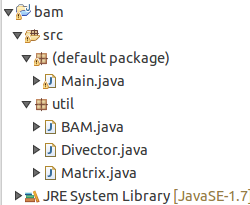
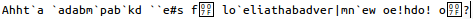

基于《双向联想存储器BAM（一）——概述》中描述的原理，我用Java实现了BAM。本文先给出BAM的代码，然后通过一个案例来展示BAM在处理带有杂音的数据中的超强潜力。
===================阶段一：代码实现=================
整个Java工程的目录结构如下图：

Matrix.java是矩阵的实现类，定义了最基本的矩阵运算。Divector.java是在Matrix.java上再封装了一下，表示双极向量，本质是1行n列的矩阵，而且元素的取值要么是-1要么是1。最后是BAM.java，实现了一个双向联系存储器，通过remeber方法记住一对矩阵，并且能够通过thinkAFromB、thinkBFromA等方法取出记忆的矩阵。
Matrix.java：
package util;
import java.io.PrintStream;
public class Matrix
{
private int m_row_count,m_col_count;
private int[][] m_values;
public Matrix(int p_row_count,int p_col_count)
{
m_row_count=p_row_count;
m_col_count=p_col_count;
m_values=new int[m_row_count][m_col_count];
}
public int getRowCount()
{
return m_row_count;
}
public int getColCount()
{
return m_col_count;
}
public void reset()
{
for(int t_row_index=0;t_row_index<m_row_count;t_row_index++)
for(int t_col_index=0;t_col_index<m_col_count;t_col_index++)
m_values[t_row_index][t_col_index]=0;
}
public void setValue(int p_row_index,int p_col_index,int p_value)
{
m_values[p_row_index][p_col_index]=p_value;
}
public int getValue(int p_row_index,int p_col_index)
{
return m_values[p_row_index][p_col_index];
}
public void print(PrintStream p_printer)
{
for(int t_row_index=0;t_row_index<m_row_count;t_row_index++)
{
for(int t_col_index=0;t_col_index<m_col_count;t_col_index++)
{
p_printer.print(m_values[t_row_index][t_col_index]);
if(t_col_index<m_col_count-1)
p_printer.print(" ");
else
p_printer.println();
}
}
p_printer.println();
}
public Matrix add(Matrix p_matrix)
{
if(m_row_count!=p_matrix.m_row_count||m_col_count!=p_matrix.m_col_count)
{
String t_error=String.format("ERROR: Matrix(%d,%d) + Matrix(%d,%d)",
m_row_count,m_col_count,p_matrix.m_row_count,p_matrix.m_col_count);
throw new IllegalArgumentException(t_error);
}
Matrix t_result=new Matrix(m_row_count,m_col_count);
for(int t_row_index=0;t_row_index<m_row_count;t_row_index++)
for(int t_col_index=0;t_col_index<m_col_count;t_col_index++)
t_result.setValue(t_row_index,t_col_index,
m_values[t_row_index][t_col_index]+p_matrix.m_values[t_row_index][t_col_index]);
return t_result;
}
public Matrix mul(Matrix p_matrix)
{
if(m_col_count!=p_matrix.m_row_count)
{
String t_error=String.format("ERROR: Matrix(%d,%d) x Matrix(%d,%d)",
m_row_count,m_col_count,p_matrix.m_row_count,p_matrix.m_col_count);
throw new IllegalArgumentException(t_error);
}
Matrix t_result=new Matrix(m_row_count,p_matrix.m_col_count);
for(int t_row_index=0;t_row_index<m_row_count;t_row_index++)
{
for(int t_col_index=0;t_col_index<p_matrix.m_col_count;t_col_index++)
{
int t_total=0;
for(int t_cursor=0;t_cursor<m_col_count;t_cursor++)
t_total+=m_values[t_row_index][t_cursor]*p_matrix.m_values[t_cursor][t_col_index];
t_result.setValue(t_row_index,t_col_index,t_total);
}
}
return t_result;
}
public Matrix trans()
{
Matrix t_result=new Matrix(m_col_count,m_row_count);
for(int t_row_index=0;t_row_index<m_row_count;t_row_index++)
for(int t_col_index=0;t_col_index<m_col_count;t_col_index++)
t_result.setValue(t_col_index,t_row_index,m_values[t_row_index][t_col_index]);
return t_result;
}
public boolean equals(Matrix p_matrix)
{
if(m_row_count!=p_matrix.m_row_count)
return false;
if(m_col_count!=p_matrix.m_col_count)
return false;
for(int t_row_index=0;t_row_index<m_row_count;t_row_index++)
for(int t_col_index=0;t_col_index<m_col_count;t_col_index++)
if(m_values[t_row_index][t_col_index]!=p_matrix.m_values[t_row_index][t_col_index])
return false;
return true;
}
}
Divector.java：
package util;
import java.io.PrintStream;
public class Divector
{
private int m_dimension;
private Matrix m_matrix;
public Divector(int p_dimension)
{
m_dimension=p_dimension;
m_matrix=new Matrix(1,m_dimension);
}
public int getDimensionCount()
{
return m_dimension;
}
public void reset()
{
m_matrix.reset();
}
public void setValues(String p_values)
{
if(p_values.length()!=m_dimension)
{
String t_error=String.format("ERROR: Divector(%d) cannot accept '%s'",m_dimension,p_values);
throw new IllegalArgumentException(t_error);
}
for(int t_i=0;t_i<m_dimension;t_i++)
{
char t_char=p_values.charAt(t_i);
if(t_char=='1')
setValue(t_i,1);
else if(t_char=='0')
setValue(t_i,0);
else
throw new IllegalArgumentException("ERROR: Divector accepts only '0' or '1'");
}
}
public void setValue(int p_dimension_index,int p_value)
{
if(p_value==1)
p_value=1;
else if(p_value==0)
p_value=-1;
else
throw new IllegalArgumentException("ERROR: Divector accepts only 0 or 1");
m_matrix.setValue(0,p_dimension_index,p_value);
}
public int getValue(int p_dimension_index)
{
int t_value=m_matrix.getValue(0,p_dimension_index);
if(t_value==1)
return 1;
else if(t_value==-1)
return 0;
else
throw new IllegalArgumentException("ERROR: Matrix of Divector accepts only -1 or 1");
}
public Matrix getMatrix()
{
return m_matrix;
}
public void print(PrintStream p_printer)
{
m_matrix.print(p_printer);
}
@Override
public String toString()
{
StringBuilder t_sb=new StringBuilder();
for(int t_i=0;t_i<m_dimension;t_i++)
{
int t_value=getValue(t_i);
if(t_value>0)
t_value=1;
else
t_value=0;
t_sb.append(t_value);
}
return t_sb.toString();
}
public boolean equals(Divector p_divector)
{
return this.m_matrix.equals(p_divector.m_matrix);
}
}
最后是BAM.java：
package util;
import java.io.PrintStream;
public class BAM
{
private int m_dimension_a,m_dimension_b;
private Matrix m_matrix;
public BAM(int p_dimension_a,int p_dimension_b)
{
m_dimension_a=p_dimension_a;
m_dimension_b=p_dimension_b;
m_matrix=new Matrix(m_dimension_a,m_dimension_b);
}
public void remember(Divector p_vector_a,Divector p_vector_b)
{
if(p_vector_a.getDimensionCount()!=m_dimension_a||p_vector_b.getDimensionCount()!=m_dimension_b)
{
String t_error=String.format("ERROR: BAM(%d,%d) cannot accept vector(%d) <-> vector(%d)",
m_dimension_a,m_dimension_b,
p_vector_a.getDimensionCount(),p_vector_b.getDimensionCount());
throw new IllegalArgumentException(t_error);
}
Matrix t_temp=p_vector_a.getMatrix().trans().mul(p_vector_b.getMatrix());
m_matrix=m_matrix.add(t_temp);
}
private Divector singleThinkBFromA(Divector p_vector_a)
{
Matrix t_matrix=p_vector_a.getMatrix().mul(m_matrix);
Divector t_vector=new Divector(m_dimension_b);
for(int t_col_index=0;t_col_index<m_dimension_b;t_col_index++)
{
int t_value=t_matrix.getValue(0,t_col_index);
if(t_value>0)
t_value=1;
else if(t_value<0)
t_value=0;
t_vector.setValue(t_col_index,t_value);
}
return t_vector;
}
private Divector singleThinkAFromB(Divector p_vector_b)
{
Matrix t_matrix=p_vector_b.getMatrix().mul(m_matrix.trans());
Divector t_vector=new Divector(m_dimension_a);
for(int t_col_index=0;t_col_index<m_dimension_a;t_col_index++)
{
int t_value=t_matrix.getValue(0,t_col_index);
if(t_value>0)
t_value=1;
else if(t_value<0)
t_value=0;
t_vector.setValue(t_col_index,t_value);
}
return t_vector;
}
public Divector thinkBFromA(Divector p_vector_a)
{
Divector t_vector_a_last=p_vector_a;
while(true)
{
Divector t_vector_b=singleThinkBFromA(t_vector_a_last);
Divector t_vector_a=singleThinkAFromB(t_vector_b);
if(t_vector_a.equals(t_vector_a_last))
return t_vector_b;
t_vector_a_last=t_vector_a;
}
}
public Divector thinkAFromB(Divector p_vector_b)
{
Divector t_vector_b_last=p_vector_b;
while(true)
{
Divector t_vector_a=singleThinkAFromB(t_vector_b_last);
Divector t_vector_b=singleThinkBFromA(t_vector_a);
if(t_vector_b.equals(t_vector_b_last))
return t_vector_a;
t_vector_b_last=t_vector_b;
}
}
public Divector thinkAFromA(Divector p_vector_a)
{
Divector t_vector_b=thinkBFromA(p_vector_a);
return singleThinkAFromB(t_vector_b);
}
public Divector thinkBFromB(Divector p_vector_b)
{
Divector t_vector_a=thinkAFromB(p_vector_b);
return singleThinkBFromA(t_vector_a);
}
public void print(PrintStream p_printer)
{
m_matrix.print(p_printer);
}
}
我们可以先实现《双向联想存储器BAM（一）——概述》中说的那个案例，即
A1=(101010)，B1=(1100)
A2=(111000)，B2=(1010)
代码可以写作如下：
import util.BAM;
import util.Divector;
public class Main
{
public static void main(String[] p_args)
{
Divector t_a1=new Divector(6);
t_a1.setValues("101010");
Divector t_b1=new Divector(4);
t_b1.setValues("1100");
Divector t_a2=new Divector(6);
t_a2.setValues("111000");
Divector t_b2=new Divector(4);
t_b2.setValues("1010");
BAM t_bam=new BAM(6,4);
t_bam.remember(t_a1,t_b1);
t_bam.remember(t_a2,t_b2);
Divector t_result=t_bam.thinkAFromB(t_b1);
System.out.print(t_result);
}
}
于是会输出：
101010
与预期的一致！
======================阶段二：精彩实验=================
我现在要演示一下，当网络维度较大且杂音较多时，BAM回忆出原始数据的能力。
直接修改Main.java的代码如下：
import util.BAM;
import util.Divector;
public class Main
{
public static void main(String[] p_args)
{
Divector t_v1=new Divector(512);
t_v1.setValues(ascii2bin("I have a tiny rabbit. It's so lovely that everyone like it. ^_^"));
Divector t_v2=new Divector(512);
t_v2.setValues(ascii2bin("What a fine day! Today I want to go climbing. Let us go! go! go!"));
Divector t_v3=new Divector(512);
t_v3.setValues(ascii2bin("Ah,this carrot is so fresh $_$. It must be tasty.How mush is it?"));
BAM t_bam=new BAM(512,512);
t_bam.remember(t_v1,t_v1);
t_bam.remember(t_v2,t_v2);
t_bam.remember(t_v3,t_v3);
Divector t_in1=new Divector(512);
t_in1.setValues(ascii2bin("i hase a tany cabbit. It's zo lovety that everyono luke it. TAT"));
Divector t_out1=t_bam.thinkBFromA(t_in1);
System.out.println(bin2ascii(t_out1.toString()));
}
private static String ascii2bin(String p_ascii)
{
StringBuilder t_sb=new StringBuilder();
for(int t_i=0;t_i<p_ascii.length();t_i++)
{
String t_bin=Integer.toBinaryString(p_ascii.charAt(t_i));
for(int t_j=8-t_bin.length();t_j>0;t_j--)
t_sb.append('0');
t_sb.append(t_bin);
}
return t_sb.toString();
}
private static String bin2ascii(String p_bin)
{
StringBuilder t_sb=new StringBuilder();
for(int t_i=0;t_i<p_bin.length();t_i+=8)
t_sb.append((char)Integer.parseInt(p_bin.substring(t_i,t_i+8),2));
return t_sb.toString();
}
}
在这个例子中，我先定义了两个函数，一个是ascii2bin，作用是将一段ascii的字符串变成二进制字符串，比如
System.out.println(ascii2bin("abc"));
的输出就是
011000010110001001100011
这是因为a的ascii码是0x61，也就是二进制的01100001，同理，b是二进制的01100010，c是二进制的01100011，因此结果就是24位的011000010110001001100011。
另一个函数是bin2ascii，作用是将一段二进制字符串转换成ascii字符串，比如
System.out.println(bin2ascii("01101100011011110111011001100101"));
的输出是
love
原理不再赘述。
有了这两个辅助函数之后，就可以进行正式的实验了。
Main函数中，先出现这么一端代码：
Divector t_v1=new Divector(512);
t_v1.setValues(ascii2bin("I have a tiny rabbit. It's so lovely that everyone like it. ^_^"));
Divector t_v2=new Divector(512);
t_v2.setValues(ascii2bin("What a fine day! Today I want to go climbing. Let us go! go! go!"));
Divector t_v3=new Divector(512);
t_v3.setValues(ascii2bin("Ah,this carrot is so fresh $_$. It must be tasty.How mush is it?"));
我定义了三个512维的二极向量，每个二极向量使用一端64个字符的字符串去初始化。因为64个字符的字符串，通过ascii2bin函数处理，就会输出512位的二进制。于是，经过初始化后，t_v1、t_v2和t_v3三个二极向量分布存储了句子：
I have a tiny rabbit. It's so lovely that everyone like it. ^_^ What a fine day! Today I want to go climbing. Let us go! go! go! Ah,this carrot is so fresh $_$. It must be tasty.How mush is it?
之后，定义一个512×512维的BAM，这个BAM就是一个自联想存储器。然后依次让t_bam把t_v1、t_v2和t_v3记住。如代码所示：
BAM t_bam=new BAM(512,512); t_bam.remember(t_v1,t_v1); t_bam.remember(t_v2,t_v2); t_bam.remember(t_v3,t_v3);
接着，使用如下代码：
Divector t_in1=new Divector(512);
t_in1.setValues(ascii2bin("i hase a tany cabbit. It's zo lovety that everyono luke it. TAT"));
Divector t_out1=t_bam.thinkBFromA(t_in1);
System.out.println(bin2ascii(t_out1.toString()));
这段代码定义一个512维的二极向量，里面存储了一段有不少拼写错误的句子，然后将这个句子输入到t_bam中，将得到的结果打印出来。
输出结果是：
I have a tiny rabbit. It's so lovely that everyone like it. ^_^
结果完全正确！这说明，输入一个含有错误的数据，BAM可以回忆出正确的数据！这个功能，类似于人脑的容错能力——人在看到有错别字的句子时，照样能够理解正确的意思！
当然，BAM的容错联系能力还是有很多的局限的。比如，如果输入的是
ii hase a tany cabbit. It's zo lovety that everyono luke it. TA
那么输出就是乱码：

由此可见，BAM无法识别“平移错位“以后的数据。也就是说，将数据中的某些位修改掉，BAM能够忍受，而如果是整个数据向左或向右平移后，BAM就无法识别了。